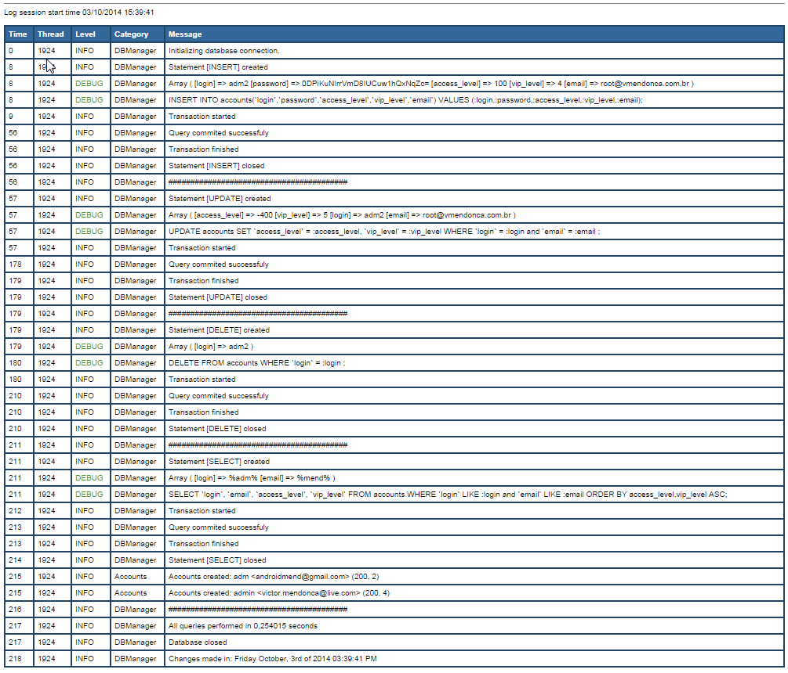
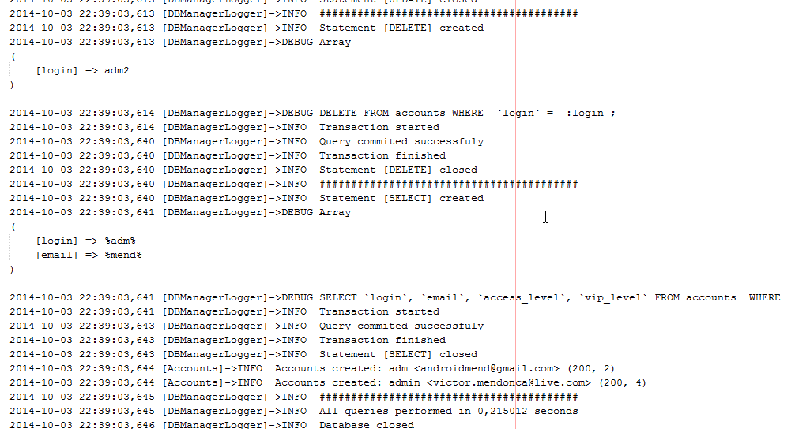

Database Manager
This class provides a safe connection with database (yeah, it does use transaction) and log all actions performed daily into a single file/day.
You can audit all queries was performed into database, with values, datetime and totally debugged by viewing the files created into ./log/ folder.


License
This program is free software; you can redistribute it and/or modify it under the terms of the GNU General Public License as published by the Free Software Foundation; either version 2 of the License, or (at your option) any later version.
This program is distributed in the hope that it will be useful, but WITHOUT ANY WARRANTY; without even the implied warranty of MERCHANTABILITY or FITNESS FOR A PARTICULAR PURPOSE. See the GNU General Public License for more details.
You should have received a copy of the GNU General Public License along with this program; if not, write to the Free Software Foundation, Inc., 59 Temple Place - Suite 330, Boston, MA 02111-1307, USA.
Installation
Execute the sql file located in ./src/
Install apache/log4php using composer.
To install, add apache/log4php to your composer.json file.
{
"require" : {
"apache/log4php": "2.3.0"
},
}
From there, use the composer install or composer update commands to install.
Basic Usage
<?php
define('DB_HOST', 'my-host'); // define the host of mysql server
define('DB_PORT', 3306); // define the port of mysql server
define('DB_USER', 'my-user'); // define the user of mysql server
define('DB_PASS', 'my-pass'); // define the password of mysql server
define('DB_NAME', 'my-db'); // define the database name
define('DB_ENCODING', 'utf8'); // define the encoding of statements
// Assuming you installed from Composer:
require "vendor/autoload.php";
// Get the instance of DBManager:
$pdo = DBManager::getInstance();
###### INSERT STATEMENT ######
// Array with columnKey => val (columns that will be used on INSERT clause)
$paramIns = array(
'colName1' => 'colValue1',
'colName2' => 'colValue2',
'colNameN' => 'colValueN',
);
// Creates the sql
$insert = $pdo->createInsert('tableName', $paramIns);
/*Array
(
[colName1] => colValue1
[colName2] => colValue2
[colNameN] => colValueN
)
INSERT INTO tableName(`colName1`,`colName2`,`colNameN`) VALUES (:colName1,:colName2,:colNameN);
*/
$resultInsert = $pdo->query($insert);
###### UPDATE STATEMENT ######
// Array with columnKey => val (columns that will be updated)
$paramUpd = array(
'colName1' => 'colValue1',
'colName2' => 'colValue2'
);
// Array with columnKey => val (columns that will be used on WHERE clause)
// If null or empty, the result sql will be "UPDATE tableName SET col1 = :val1, col2 = :va2, ... colN = :valN ;"
$paramCond = array(
// The first parameter of array data is the where clause (like, equal, less, etc... [see the main class constants]])
// The second parameter of second array is the operand type (and|or) to concat with next column. Use null if the last param
'key1' => array(DBManager::COL_EQUAL => array('val1' => 'and')),
'key2' => array(DBManager::COL_EQUAL => array('val2' => null))
);
// Creates the sql
$update = $pdo->createUpdate('tableName', $paramUpd, $paramCond);
/*Array
(
[colName1] => colValue1
[colName2] => colValue2
[key1] => val1
[key2] => val2
)
UPDATE tableName SET `colName1` = :colName1, `colName2` = :colName2 WHERE `key1` = :key1 and `key2` = :key2 ;
*/
$resultUpdate = $pdo->query($update);
###### DELETE STATEMENT ######
// Array with columnKey => value to where clause to delete
// If null or empty, the result sql will be "DELETE FROM tableName;"
$paramDel = array(
// The first parameter of array data is the where clause (like, equal, less, etc... [see the main class constants]])
// The second parameter of second array is the operand type (and|or) to concat with next column. Use null if the last param
'colKey1' => array(DBManager::COL_EQUAL => array('colVal1' => null))
);
$delete = $pdo->createDelete('tableName', $paramDel);
/*Array
(
[colKey1] => colVal1
)
DELETE FROM table WHERE `key1` = :key1;
*/
$resultDelete = $pdo->query($delete);
###### SELECT STATEMENT ######
// Array with columns to retrieve
$paramSelect = array('colName1', 'colName2', 'colNameN');
// Array with columnKey => value to where clause to select
// If null or empty, the result sql will be "SELECT col1, col2,... colN FROM tableName ORDER BY col1,col2,...colN;"
$paramWhere = array(
// The first parameter of array data is the where clause (like, equal, less, etc... [see the main class constants]])
// The second parameter of second array is the operand type (and|or) to concat with next column. Use null if the last param
'colName1' => array(DBManager::COL_LIKE => array('colValue1' => 'and')),
'colName2' => array(DBManager::COL_LIKE => array('colValue2' => null))
);
// Array with columnKey -> value to order clause to select
// If null or empty, the result sql will be "SELECT col1, col2,... colN FROM tableName;"
$paramOrder = array(
// Fields used in order
'fields' => array('colName1', 'colName2'),
// Order type (asc|desc)
'order' => 'ASC'
);
// Creates the sql
$select = $pdo->createSelect('tableName', $paramSelect, $paramWhere, $paramOrder);
/*Array
(
[colName1] => %colValue1%
[colName2] => %colValue2%
)
SELECT `colName1`, `colName2`, `colNameN` FROM table WHERE `colName1` LIKE :colName1 and `colName2` LIKE :colName2 ORDER BY colName1,colName2 ASC;
*/
$resultSelect = $pdo->select($select);
unset($pdo);
?>
Screenshots

